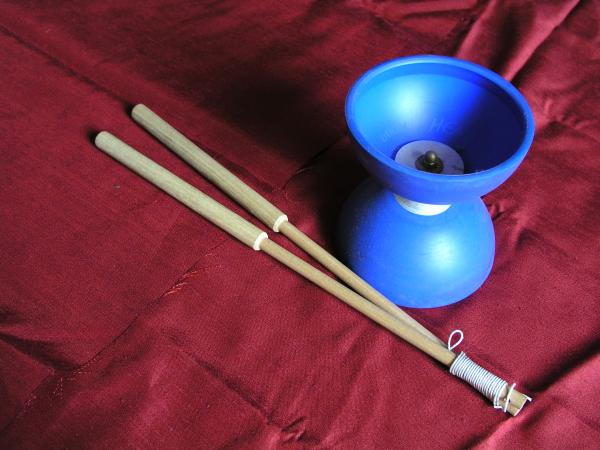
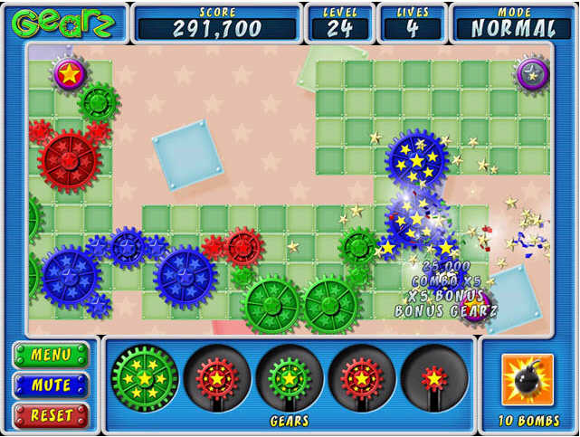

ok, this is my first ever post on these forums and here's my list:
Stepself
Formica
Makron
Kablizzy
Cyberdonkey
Maybe not what you were expecting.
Stepself
Formica
Makron
Kablizzy
Cyberdonkey
Maybe not what you were expecting.


 .
. Don't get me wrong, I have nothing against maximo it's just...well...COME ON!
Don't get me wrong, I have nothing against maximo it's just...well...COME ON! 
 oops, wrong page
oops, wrong page  . .
. .I'm so glad you said this.
 . No seriously, scientists crap on about the slim chance that all conditions wuld be right for life to spawn and if you see it like trying to roll a dice so that it lands on it's edge, eternity is a long time to fit in a lot of tries so it seems credible enough.
. No seriously, scientists crap on about the slim chance that all conditions wuld be right for life to spawn and if you see it like trying to roll a dice so that it lands on it's edge, eternity is a long time to fit in a lot of tries so it seems credible enough.  .
.
 . I was just angry and I was going through a particuly bad time then. Also, my cousin was over at the time. He had often watched me on numa and somtimes played my maps. He thought it was all very exciting and decided that he waould make an account for himslef and rate it zero also. He didn't acctuly do anything else on that account as far as I know so I can see why I looked like I rated it zero twice. The account was made on my computer and everything. I also know that I did not do the right thing and I am not trying to justify it I am just telling you the reasons (even if they are not particuly good) to you. Also, I went back with my "nine" account and rated "throwback" 5. Also, I deleted the castle map myself. It was more of a fortification of shame. As ashamed as I am, I do not belive I deserve the on going criticism I get for that. I admit I have done the wrong thing but I have done everything in my power to make it right again
. I was just angry and I was going through a particuly bad time then. Also, my cousin was over at the time. He had often watched me on numa and somtimes played my maps. He thought it was all very exciting and decided that he waould make an account for himslef and rate it zero also. He didn't acctuly do anything else on that account as far as I know so I can see why I looked like I rated it zero twice. The account was made on my computer and everything. I also know that I did not do the right thing and I am not trying to justify it I am just telling you the reasons (even if they are not particuly good) to you. Also, I went back with my "nine" account and rated "throwback" 5. Also, I deleted the castle map myself. It was more of a fortification of shame. As ashamed as I am, I do not belive I deserve the on going criticism I get for that. I admit I have done the wrong thing but I have done everything in my power to make it right again  .
. 
I wasn't criticizing you. I don't think anyone was.Sorry, I just hate it when this is brought up
.1. The whole thing about every single map being needed approval before being shown is a good idea. If you think about it, it's not an impossible task. Exactly how many maps are being sent in each day? Not that many... However, the only problem I see with this is that maybe all the moderators wouldn't be able to cover NUMA every single hour.Well the mods won't have to have NUMA covered every hour, besides, I'm in austraia and so in formica so we can cover some hours you guys can't
. Also it would pretty much be garunteed that your map will be up the next day at the latest.

wow... what'd this guy have against Atramentis?
 . Bloodlot was always scummy. he stole tonnes of people's maps and just added gold or somthing so he could resub them. . I didn't post a link on purpose. New evidense is comming up all the time and nobody has the full story. I'm just trying to see what the main opinion is. Well it looks like this polls been pointlessafied. .
. Bloodlot was always scummy. he stole tonnes of people's maps and just added gold or somthing so he could resub them. . I didn't post a link on purpose. New evidense is comming up all the time and nobody has the full story. I'm just trying to see what the main opinion is. Well it looks like this polls been pointlessafied. .
I think the problem lies in the fact that they're objects. I think it's a neat idea, since I hate having to jump off of doors and one-ways, but I dunno. Seems awesome!How can it be when you can wall-jump normally off bounce-blocks?

 . . ?
. . ?


The Sith tradition is a tradition of fear, anger, and emotion. The Jedi tradition is a tradition of serenity, wisdom, and discretion.
Quick power is attainable through the dark side. The cost of this power, however, is slavery--slavery to one's fear, hatred, and grief. A Sith must sell his soul to the dark side of the Force to attain his power. This is a path to pain and ultimate failure.
The Jedi offer ture peace and true power of spirit. Jedi trust the Force, rather than control it and enslave it. To a Jedi, the Force is an ally--and a powerful ally it is. Through their trust of the Force, a trained Jedi can exceed the power of any Sith.
The appeals of the Sith are tempting and many, but I believe you are all strong enough to make the proper decision. Join the Jedi religion. Your soul is depending on you.
. Right now, I'm gunna have to say 3/10


You (Atramentis) seem to want mods to eliminate 'stupid' maps. Judgement of what maps are 'stupid' is an entirely subjective thing. Adding mods whose job is to clean up 'stupid' maps will merely ensure huge arguments over what maps they should delete, complaints over mods deleting maps that they shouldn't, etcetera. _Nobody_ will be able to agree on what maps should be removed and what should stay.

")
It'd probably just frustrate newcomers who aren't allowed in.I think it would give them more to strive for.
You can also have things like: your map does not get posted unless three of the elites says it is okay.I've gotta say, I've completely sided with arachnid on all matters like this. Who decides?
the other thing too is that i fear making harsh but totally true comments on these crappy noob maps because they will probably go and rate all of my maps down.

Quote@Razorstar: if the elite lounge does take effect, i doubt that you will be able to be an elite member. you are quite new, and your display of taking out anger on noobs shows that you may rate noob's maps unfairly out of anger and fustration.
I fancy the idea, but have at least one concern. Who exactly is it that will be let into "the elites?" The top map-makers or the top map-raters? What is the point of letting in the best map-makers if they never rate maps, but what is the point of letting in the best map-raters if they aren't very good map-makers? Do you see my conundrum?
By the way Atramentis, and I am really sorry to tell you this, but it looks like somebody just went through all of your maps and torpedoed them with low ratings (you aren't even on the top 20 authors anymore). Maybe further investigation should take place...I KNOW!! SONS OF BITCHES. thanks for pointing it out.
The whole point of the EML would be to have people who you care about give you ratings, and this fact alone is motivation enough to rate each other's maps.
I understand. I guess my real concern was that people who were let into the elites wouldn't take advantage of their position, and neglect to actually rate each other's(or anyone else's) maps.
 YAY .
YAY .Atramentis's idea is great. but what i don't see is what the elite member's ratings are going to do?
okay, the elite members rated. but then what happens? is the map taken under consideration to be deleted? or is it just a better way for Numa members to know how good their maps really are by people who really know their maps.
QUOTE
Sorry but we have to be careful not to blur the border between big forum users and big numa users.
what do you mean?
Quoteand that would be me....
1) Arguments over who is a member of this 'clique' and who isn't.Well that can be sorted out. I think I could get a list of 10 people organised and we can go from there using the 90% formula to grow.
2) Its effectiveness in general. On average, NUMA gets 45 new maps a day. Are 3 members of this 'clique' going to rate every map?No, I don't think we will rate every map but not every map get rated anyway.I think we should have a fair few covered though (espeacily if only 3 votes are needed from EMs).
3) Its usefulness - if only the person being rated can see the rating, how much use is it? Why not just have these people post (much more useful and constructive) comments on the maps? What's more, if the audience is so small (1 person), what's the incentive for this clique to actually rate anyone?Only the maker being able to see the rating was never part of the plan.
4) Lots of construction and management overhead for me.Ye, I'm sorry about that. It's just that you have put a lot of work into NUMA and it would be terrible to see the current trend continue. I reall think somthing has to be done about the noobs without being too harsh. This seems like the perfect solution right now.
) and maximo high (as he is idolised by many)? I am number 2 and he is number 3 or 4 or somthing. If it was number 1 and number 2 it would seem more plausible but COME ON DUDE!! It's not like you had no time to come up with somthing better. It wasn't a face to face conversation where you have to think on your feet. What is this dommed world coming to?
Yup. You have no idea how great some of his stuff is. Really.thanks
I'll try to get that sorted some time this week.QuotePost something
. ...but would a ceiling chaser cause any danger?
QuoteBy the way, Ceiling Guards.
")
Scorched Earth bro... I remember that game. Had it on Windows 3.1.
 . We're talking HARDxxxCORE density here and that means incredible gravity. That kind of gravity can bent the time-space fabric to the point where we acctuly experience it's effects.
. We're talking HARDxxxCORE density here and that means incredible gravity. That kind of gravity can bent the time-space fabric to the point where we acctuly experience it's effects.


QuoteYou know what?
The whole thing is just plain stupid.
I mean, why have multiple accounts? To go crazy with stupid little in- jokes, act like jerks, scare little n00bs? An ego boost? Make really stupid jokes? Or maybe to act like a jerk in a way that you wouldn't do under your real account? Well, if that's the only reason you have an alternate account- to act like a jerk cause your real account is nuked- well, then you should just get stuffed.
And, guess what, to the rest of you with alternate accounts or- just as bad- merged accounts- NOBODY FINDS YOU FUNNY! You are not achieving anything, nobody gives a stuff about what you're saying, you don't achieve a single thing. So go away, and leave the rest of us in peace. If you want to fake your identity, you could always head over- oh, I dunno- here?
Anyway, I'm off. I hope you crack down on this, Keron, something needs to be done.
Guest Posted on Nov 18 2005, 04:02 AM
I really don't think that's the way to look at it, Atramentis, NUMA will never get any better if none of the talented authors submit any maps. You can give up, but it's a shame that such a great place be overtaken so easily, and by a group of dipshits at that.
maestro Posted on Nov 18 2005, 01:27 PM
Where the hell is the "who gives a shit, get over it." option? That's where I'm at.
After looking at some of the rants about ratings and noobs, I think I'm contracting nevermore syndrome. Just get over it. It won't kill you.
).You don't care about us nameless, faceless people but you care about nameless, faceless people who rate your maps poorly?I don't care what you people think of me. NUMA is like any other internet game like soldat. You play and you try to be the best. Now, the whole dynamics of the game has changed due to people who do not know what they are doing so it is hard to find it fun. Do you see what I'm saying now?
I've lost a lot of respect for you. Insulting people is not the way to communicate your opinion.I'm not insulting anyone, I'm not using any names or directly countering anyone. If you don't like what I'm saying, it's your problem.
So age is the difference between comments being shallow facades and the same comments actually meaning something to you? Grow up - mentally.No, age is not the difference, but there does seem to be a link. Of course if you where old enogh to read, you would realise that comment had no relevence to anything.
That's my first real insult but hey, it was defenceQuoteOf course if you where old enogh to read, you would realise that comment had no relevence to anything.
.Of course if you where old enogh to read, you would realise that comment had no relevence to anything.Once again, read the posts before embarrasing yourself. I never said anyone is pretending snipers don't exist, it's the problems themselves that you are denying.
I still fail to see how it is immature to just ignore snipers and not care about ratings.No, you fail to see my post's point. I didn't say that either. I said it's immature to try and act mature and fail. Saying you don't care about ratings when ratings are a fundamental part of NUMA is doing just that.
Err... right.after saying this,
And NUMA player? It's N player.
is what everyone else was thinkingQuote
Oh christ, not another "HAHA YOU GUYS ARE TEH LOSERS WIT ZITS" argument. blue_tetris and the late Kablizzy have fiances, dude. I'm sure others have girlfriends as well. So just because you don't have a girlfriend, doesn't mean you should take out your idiotic lonely anger on us. Bastard.
No! No no no. Just no. Sorry if that's harsh... but no.
Where in a good level do you ever see a single piece of gold in an area? You don't. Gold is almost always clustered in small groups. If you want to give the player more time, you make larger clusters of gold. For less time, make the gold sparse throughout the level. I just can't see this making any difference. I think gold that removes time would be interesting though.
I pity his feeble mind for not having the capacity to realise my dream.Stop being such a nerd. Don't talk like that, you can't even do it well.
monkey_of_doom has rated one of my maps a low score just because i thought one of his was worth a 2.
They aren't totally different. The llama comes from the vicuna, and the alpaca comes from the guanaco. They're all camelids.shut up
I certainly hope you don't mean this. Baseball was a whites-only sport. A black man decided to play in it. Should he have just made his own baseball league? Should he have gone looking for a black baseball team?
Women couldn't vote in the U.S. for the longest time. Should they have just moved to a new country where they could vote?
The worst thing I hear with this statement is that "these people should go to where they are the majority". I sincerely hope that you realize the gravity of this statement. That you have essentially stated the minority "doesn't belong here". That they should "all go back to Africa" or their various other countries of origin. I feel like entertaining this argument any further would clearly place you and I on opposite sides of the "racist" line, because it's quite obvious how you feel about those people. You know, those people who aren't like you.
"If a black guy went to America and he didn't like them playing whites-only baseball, he's not going to try and stop them and accuse them of being racist, he's going to let them live how they want, he'll live how he wants and if he hates it that much, he will leave America."
First off, determine who "we" is. Is it fair to classify people as "we" and "they"? Secondly, "they" do know and respect that many around them celebrate Christmas. Do those around them respect that "they" celebrate other holidays? Instead of just wishing a select few to have a good Christmas, "we" could wish everyone (members of both "we" and "they") a happy holiday, simply by chaging a single phrase.
But you have to understand that saying "Happy Holidays" is strictly better than saying any single denominational greeting, when dealing with someone that you don't know. If you know a person is Jewish, shoot off a Happy Hannukah. Go for it. But if you don't know? What the hell could POSSIBLY be the harm in playing it safe, as opposed to being a militant asshole about it?
"Happy Holidays" doesn't draw lines between religions. It doesn't excommunicate any person for reasons of religion. No one's saying "Don't enjoy Christmas". They're saying "Have a happy holiday", whatever that holiday may be. You and a Jew and a Muslim can all hear this phrase and take away the same meaning: "Have a happy holiday". It's simply considerate of a larger crowd. With a simple change of two word--two powerful words, but just two words--we can tears down religious barriers and use a term that respects everyone equally.
No one is saying that you shouldn't have a good Christmas, they're saying that you should have a good holiday, no matter which holiday it happens to be.
You say that "happy holidays" is a one-size-fits-all greeting. I conjecture that, in fact, it is not. I suggest that perhaps there is a point at which you stop going out of your way to try to avoid offending others. There is a balance to be struck.
Awww, how cute, you don't wanna. Wow, that's quaint. I'm glad your practices are so deep-seated that predjudice overrules common sense. You can say Merry Christmas all you want, but I wouldn't complain when someone gets pissed at you for it, and you get fired from your company for violating company rules.
It's all about business, man. If my company's losing money because people are getting offended, you'd better believe that I'm gonna lay down the law.
I mean, you're very close to stating with that whole "Doesn't want to join in" thing that if Jews and Muslims and people who celebrate boxing day don't want to say "Merry Christmas" and only Merry Christmas, then sucks to be them? What kind of backwards, ridiculous... So, if everyone said Happy Hannukah instead of Merry Christmas, and Hannukah was the big holiday, and Christmas meant jack to 90% of the country, wouldn't it get just a tad bit old after a few years? 10 years? A lifetime? Putting myself in that position, that sure sounds like insensitive oppression to me.
I mean, it's akin to stating that Gay people can't marry because you don't want them to marry, or no one can have an abortion because you say they can't, or people can't go to the bathroom at 3 in the morning because it's frowned upon in your corner of the world. When something is wrong, people try to fix it. It's the overzealous traditionalist culture that tries to keep things the way they are for no better reason than because "that's the way they are."
By "Globalize" you mean become like all you Redneck Yankees, right?
C'mon, you Americans have the most twisted view of the world imaginable. Your idea of globalization is everyone becoming like you and being fat and ignorant.
No offense though.
roflmao Or have I gotten confused somewhere in that post?
This has all gotten entirely out of hand.
Happy Holidays is:
a) culturally appropriate,
c) legally responsible in the workplace.
That's why we use it. If there was an other factor of any importance, we'd consider it. I use "Happy Holidays" because I respect people of more than one religion. I don't care if you say "Merry Christmas". That's not the issue. The issue here is that neglecting other people just isn't nice. No, no one's ever going to make a law about it. Here in the U.S., you can wear your swastika T-shirt, go to an NAACP meeting, and scream "White Power" all day long. That doesn't make it right. Sure, "Merry Christmas" isn't offensive. Not in any way. But that doesn't mean that you can't say a more respectful term on occasion.
I hope you'd all try saying Happy Holidays when you're with strangers or people of many different cultural backgrounds, but you certainly don't have to. School, work, and in places of business, you may want to say Happy Holidays to all people, to show them all the same level of respect. However, if you'd like, you can say Merry Christmas to your fellow Christians and Happy Holidays to those guys with the different colored skins. I don't care either way. I just hope you hold a level of respect for strangers, regardless of their beliefs.
I think, more importantly, the lack of respect here is evident for additional reasons. (The same reasons I've found other places to hold more civilized debate.) Metanet's debates run the risk of having the following problems, which allow arguments to fall by the wayside in favor or less intelligent, and more grade school methods of argument.
The following points of this conversation were only used to demean, harm, and insult people. They were attempts to be holier-than-thou and psuedo-smart-ass. I would say that these following are good reasons why Metanet's Intelligent Debate forum falls short of its mark. These are very childish.
QUOTE (Atramentis)
Simple. But I guess that doesn't mean you'll understand it...
Rude and not necessary to the conversation. It just tries to claim that I'm ignorant of something. Why pull me into the conversation? Talk about the issue.
QUOTE (Atramentis)
I'll be sure to send you some tissues for chistmas so you can have a good 'ol cry at how unfair this big celebration is.
Wow. Witty. I'm sure you spend a good portion of your time not getting stuffed into lockers, widdle boy. Hmm... that relatively mindless remark of child-like superiority felt really good! I can see why you resort to this so much!
Then Atramentis used a Bush picture of some sort to refer to me. May I remind you that Bush hates black people and Mexicans. He would say that Christmas should be the only holiday that people should be allowed to talk about.
QUOTE (Atramentis)
lame, lame and lame
This isn't rhetoric. This is rude and demeaning. Why say this? Why not forgo this juvenile statement and make a claim against my argument? I don't know.
QUOTE (Nemesis)
Awww, how cute, you don't wanna. Wow, that's quaint.
Ugh. Does this sate some perverse superiority complex? I suppose it must.
QUOTE (Atramentis)
You're being so pathetic about this that it's laughable.
Not necessary. Get to your point.
These rhetorical inferences have nothing to do with the argument. So why do I dislike them? It makes a discussion of something that matters nearly impossible. It's childish and should be considered flaming. If this was an actually intelligent discussion, these things would not be present. If I were a mod, I wouldn't even post a warning or anything. I'd just delete these useless comments and leave the actual discussion of the issue on the page for all to see.
*sigh*
It's evident that many people in society are too rude to consider anyone else's opinions or beliefs. Even so, I advise people to respect other's beliefs--even if those others are black, Jewish, or Chinese instead of people like themselves. It's well within your rights to treat anyone any way you like, save physically injuring them. However, I advise that you treat those around you with respect and a sense of civility.
To jflash, this is my final word on the matter, as an emotionless marketer:
We say "Happy Holidays" in my office. We encourage members of the office to bring in things to help make the office festive. Wreaths, crosses, stars of David, Christmas trees, plush Santa toys--all are allowed and encouraged. Because we celebrate many holidays, here, we say "Happy Holidays". If we made Christmas cards here, we'd likely say "Merry Christmas" instead. However, in PR, we only say "Happy Holidays". Management must acknoledge that as the only logical choice.
Marketing is a business of true lies. We're in the business of telling lies quite sincerely--so far as they are no longer lies. That's the root of CRM (customer relationship management). That's our business. Clerks in stores must always wish people well, whether they mean it or not. The logical choice around the holidays is to wish customers a happy holiday. So, how do you wish customers a happy holiday? Well, you could make an assumption about their choice of holiday or you could say "Happy Holidays". Management tells clerks to say "Happy Holidays", because trying to make a guess about the customer's choice of holiday can lead to poor customer relationship management. Demographic data and focus groups have proven that "Happy Holidays" receives a larger positive response in a larger portion of the target market, at least in most businesses. Again, if you sold Christmas cards, your target market might like "Merry Christmas" more and your management would have you say that more often. However, most businesses profit in the long run by using "Happy Holidays".
It's all about profit. You shouldn't say, "Why would they force clerks to do that?" That answer is obvious. It makes money. If we could kill three babies a month and make a profit (after considering all the money we'd lose having to cover up our murders, pay court fees, and combat bad publicity), we would do it. In fact, we may already kill people to make money. I'm not at liberty to discuss that. The fact of the matter is, management never makes the wrong choice. Ever. If they make the wrong choice, they lose money and the public knows--and they're no longer management. New Coke was the wrong choice. Enron was the wrong choice. Happy Holidays is the right choice.
It's more about respecting the other person's faith rather than hiding yours.Well why can't they respect mine? This is all very one way.
...Atramentis wants everyone in the world to bend to his will and only his will...
Blizzy's post was just. In fact, it was well thought out, and logical. What was wrong with it?
QuoteIdiots
I got a super on one of the levels in the pogosticker game.Me too, mine was on the "U-turn" level.

No man is born with predudice in his heart.

Hey, I have one of these.
I can't do any tricks but it's still fun.
Cool, I'm not alone then.
There are some good ones you're going to miss if you skip DDAs totally.
Are you going to resubmit the maps you deleted?

How sad can you get?QuoteMy RAM
I think that artamentis is just submitting his best maps and not the O.K ones. Many authors could just delete all their 4s and go higher. He just deleted everything and submitted his best.

Yeah so you could make your own responses.
nopeQuoteslyder adventures?

Can i be a judge?
*crosses fingers*
Quoteis it well known
RoflmaoQuoteGish?

My only real problem with this system is the 'too easy'/'too hard' option.
I don't believe in too hard or too easy, as long as the level is interesting/fun the difficulty doesn't matter to me.
And i can also see n00bs trying it out spamming maps. just going too much this too much that
FineQuoteReveal more...

My English is not very well...but I have some question ...
When this project will be aviable for downloading ?
I am a big fan of the 'N' and I am interested in N in 3D ...
Please, answer me !!!
Everyone stop arguing with atramentis, as he seems to have spent the last 24 hours coming up with comebacks to every possible argument. Either that or he's just a good debater.I think I'll lock in "B" thanks, Eddie (Australian joke).
And shouldn't this be in NUMA discussion?That exists?
Also - It should be so that you can do this and leave a comment... It could be in bold so you could easily see it..
I made this point to macaddict: The difficulty category should be stricken. Just because a map is easy does not mean it's any less fun/better than a tougher map. And also, as the skill of judges tends to fluctuate, the ratings will not be even. I know opinions vary also, but this stands out more as a problem for me.
What about Quote of the Year? I't would encourage humourous posts, which are good.



lol. atra, on the second picture you do realise that the diablo string is caught round your neck, right?
Quote'Atramentis'
anagrams to
'Merit Satan.'
QuoteGod isn't real
anagrams to
Strong ideal
as long as you dont have your brother in it. damn im still metally scarred after seeing that.
Are you a smoker? If so, then you have no rareness in you
)Thanks! That helps for jumping from wall to wall, but how can I jump on one wall using wall jumps (no wall paralell to it). I've been just holding down the right button (vise versa if the wall is to the left of me) and repeatedly pressing space. Do I have to let go of the right (or left button) for a second to press the space and then quickly press right again?
Why are you dragging innocent people with you and forcing them to do your bidding!?
So, It is a combination of maps by you two.
It's blatantly this, whatever that may be.
Cool.
Yea, sorry about not posting a game...I forgot about this and I wasn't sure if I was right anyway (even though I listed every Zelda game I knew...and I wasn't sure if there was only one for snes or not...shhh) So could I post a game now?? Or was I too Late??
You misunderstand, Atramentis. xdude_rox was the one who guessed my previous one. He forgot to post a game, so RedKolonoa jumped in.
Can we lock this please? The reasons given above show that any attempt to make N a 3D game would be a virtually guaranteed failure.or at least moved to B&T so we can swear at the n00bs
Can we lock this please? The reasons given above show that any attempt to make N a 3D game would be a virtually guaranteed failure.DO IT!
I am starting to hate this forum for one reason...You all know why.
Quotewaits for the octopus to rip out its eye
Why did you even bother? Shut up.QuoteQUOTE (Kablizzy @ March 20, 2006 08:46 pm)
Rock on! Have fun, guys, keep up the great work! We're all behind you two!
That'd Be a bit akward for them, don't'cha think? Maybe a while back, when there was a smaller number of us, as in 5 or 10. but over 1000 is a bit much.
Unless you mean spiritually.. then.. Yea, I'm ok with that.

i cant say that anything about the game really turns me on. i just love playing it. i love seeing the ninja die. its frustrating to play it over and over again but i guess it just fuels me you know?omg...please...keep your stupid little characers to that pitiful little thread you made for them.
EDIT: Woops, didn't realise it was supposed to be your own recipes.

It looks like you were photoshopped into that picture...
Or am I just stupid...
Yes, Aju, we were drinking alcohol. We're in eighth grade but the guy at 7-11 said he let us buy some if he could come to the party. We got soooooo smashed.... The next day, my bed was covered with volmit and girls.
It was Fanta, I believe.
Quote*commands Carnifex to maul naked_cowboy_tetris*
*Carnifex mauls naked_cowboy_tetris*
*commands Carnifex to maul emo_tetris*
*Carnifex mauls emo_tetris*
Carnifexs do not like tetris's!
*notes the Carnifex is getting tired*
*gives them to the Carnifex*
Grr...these tetris's are getting annoying. If another one comes, I will feed it to this Carnifex!
*pets Carnifex*
*feeds black_tetris to the Carnifex*
*pets Carnifex again*
*feeds laser cannon to the Carnifex*
*pets Carnifex*
...I was kidding. Does that seem mildly plausable in your minds? 'Cause it's really not.It's not like it doesn't happen
I was going to ask what you meant by me making a "tool" of myself, but then I remembered that I had made a decision months ago to disregard your posts as the babbling of an ignorant child.heh, yes suki, I felt a similar way towards you when I read you post reading:
QuoteI judge books by their covers because I'm seldom wrong. I have no qualms about hurting living creatures if they pose a direct threat to my well-being. I might even kill something for convenience, but only when my task is very important. I eat meat because it's tasty, and I don't care what's killed or how that meat is treated. I have seen enough gore in so wide a variety of places, including personal experience, that it no longer affects me, and I won't be squeamish if I need to, say, destroy someone's eye with my thumb.
Politically, I'm something of a left-leaning moderate. I believe every human should have a chance (I'm not racist or sexist, either) to rise to power by taking advantage of government programs. I reserve the right to own as many guns as I can carry on my person at any given moment.
I do anything necessary for success, though I stay away from means that don't result in my maximum benefit (like cheating on a test, but only because that would mean I wouldn't receive the full benefit of knowledge of the material).
Honor was invented by the foolish who needed something to counteract indirect harm from intelligent enemies. Honor is about as meaningless and restricting as religion.
Quotes I live by:
"Do not go gently into that good night. Rage, rage against the dying of the light."
"I have sworn eternal hostility against every form of tyranny over the mind of man."
"Faith is nothing but a measure of how desperate someone is for purpose and companionship that they abandon reason."
"A man should be as proud of his faith in God as he would be of an addiction to heroin."

Atramentis:
I really don't understand a few things going on in this thread... not the least significant of which is why Atramentis though that that quote of mine was relevant to this topic or something that I'd be embarassed about. I stick by what I said in your quotation, and I think you're a little off your rocker if you think that's something so shocking or embarassing, or whatever the hell you think it is, that you think it'd be effective to throw it in my face. The emo-meets-redneck business I really don't get, and that makes me quite uncertain that you have any actual idea of what you're talking about.
I'm not even sure you're trying to insult me. Are you?
Are you, like, a foreigner or something?
If you have a bone to pick with me, start something in the BnT, and I'll be happy to quell your irrational hate.
What, is there honestly anyone out there who would argue that the girl wearing the skirt cut too high was asking for it?ummm, I think that's his point...wich you missed...
This reminds me of the issue of provocation in rape. Do you blame the rapist (the guys who trashed the funeral) or the girl who was wearing a skirt cut too high (the guys who advertised the funeral)?no, it's more like having a wedding in a paint-ball arena. Everyone there has paid to go in their for it's intended purpose, and if there are those who do not wish to use the space for that, it is hardly realistic to expect everyone else to leave them out of it when it is something that is based on that kind of interaction with other people.
Oh, come on. Everyone knows they're getting less triangular. They're getting out of shape from too much pi.


well that was 2 years ago, a lot of people have changed....
im sorry, im a failure in life...
1.What is the best way to get down from a camel?
2.How could you be severely injured by being hit by tomatoes?
3.Where was Queen Cleopatra's temple?


I think someone must have hacked his account!
Quote****. Just, ****
Man, I dont know what to do. ****, oh ****... OH ****ING HELL!!!
Ummm Crap, I dont know how the hell Im supposed to say this. ****, I dont have a ****ing clue. Theres got to be a way to say this properly, but I dont know it. Hell, I didnt ever think that Id ever be signing on to an internet forum to tell its members that one of their most loved members has died.
Im sure you all know Atramentis, or his internet persona, anyway. Brilliant mapmaker, was the top for quite some time, you know the guy? He goes to same school as me, but is in his final year whilst Im still in year 11. We met properly, believe it or not, while playing N He came over, said something like Wow, youre playing N! and then we started talking about stuff like, Have you heard of NUMA?! and so we started talking.
Since then, we got to know eachother quite well He was in the year above me, but we were quite good friends. Wed joke around and stuff, and were trying to arrange a student harvest as his year 12 leaving prank, where wed have this table on the oval, and nothing else, and
No. Enough of that.
I was at school when I got the news. Not the news of his death. He was in intensive care at the time. I was joking around with some of the year 12s he used to hang around with, and there werent a ton of them there, and I asked Wheres Jared? and one of them said in intensive care. You know. I treated it like a ****ing joke, laughed, and asked where he was again. I must have looked like such a ****ing arsehole, ****ing around laughing when there friend was in hospital after getting hit by a car right near his home.
The car driver wasnt even drunk. Or using a mobile phone or anything. There was nothing wrong with her, it wasnt a hit and run or anything, they just ran over who you know as Atramentis on the driveway of a sub divided block. Or maybe there was something mentally wrong with her, I think I heard something of the type mentioned, but screw it, I dont really care about the person who killed Jarred. It couldve been anyone who did the killing, but its the death that screwed me over.
He was wearing headphones on high volume, and thatd be the lesson of the death, insofar as there is one, dont wear headphones in traffic, but it wasnt in traffic and it there isnt a lesson to be learnt here, just a bloody pointless waste of life.
And, again, I dont bloody know how to say this, but hes dead. He was in intensive care for, I think, 18 hours or so. He died with his family at his side, but hell, what difference does that make? Hes still dead. He still died. In a charmless hospital room with machines pumping stuff in and out of him
Hell. What do I know of that? I wasnt there. I didnt see it. And Im sort of grateful for that. I dont want to have the memory of a last rattled breath, or of the slight, almost undetectable switch from tortured living to the nothingness of death no, who needs the memories of such things? The imagination of it is bad enough.
I only recently heard that hes dead. Full on dead. Not lying down someplace slowly recovering, to emerge not unchanged but ALIVE, damnit, and still the same person in some deep down place And thats that. A brilliant man lost to the world from
Oh, damnit, I sound like Im delivering a Eulogy or something. Plenty of time for that later, when a real one does get delivered over what used to be Jarred. Probably delivered by a priest or something, who never knew of his convoluted, partially atheist but GOOD views on religion. I prayed for him, can you imagine that? I dont even have a clue if he wouldve wanted me to or not, but I did all the same, and I never wouldve thought it
Crap. I really dont know what to do, what to say, what to write, what to tell my family when at long last they come home (though they never even met him, and only supplied transport to his house grudgingly when they had nothing better to do), and well, here I am. On the frigging internet, telling a frigging bunch of zit- covered prepubescents about the death of someone they know nothing about, somebody who theyll never feel the actual zest of loss for anymore than they would somebody like Brickman who just, one day, disappears. Hell, to you, he could still be alive someplace and well for all you know, and so it wont be real.
I only wish I had that.
So yeah, thats it. He died, I didnt even hear about it until it was almost over, and now hes being shoved into the ground like so much garbage in an expensive case in just a few days time. No, if you live nearby, youre frigging not allowed to drop in and pay your respects during the service like some sort of retarded, messed up gatecrasher.
And here I am, going to watch my third generic, fill-the-blanks eulogy from some uninspired priest, and see my third body swallowed by the earth, and wish it wasnt so. Violently, violently wish it wasnt so.
The world has just experienced a great loss. Just another great loss, and they happen all the time, but this shouldnt have been. Im sorry.
And thats it. Im done.
Bye.
Quote: "Forumer Terms of Service"If you create a forum, it is your responsibility to make sure that no content on your forum is breaking any of the rules outlined within this document. We expect you to moderate the content of these forums regularly, otherwise your forum will be deleted.
Quote: "Moot"There has been a lot of rumbling on /b/ [and the rest of the site] for the past few months, heckyears, about the quality of posts on the board(s). As we all know, there is no barrier to posting on 4chan. We don't have mandatory user registration, and God willing, never will. I've said in the past that "any retard with half a brain and a keyboard can post on 4chan", and that level of accessibility has produced mixed results.
The site is great because anybody can jump in and start using it, which has generated some amazing content, but also, a perpetual stream of garbage. Honestly, I don't know what the solution is. I'd like to keep the site as open to all users as possible (yes, that includes new ones too), while still enforcing a minimum quality standard. This can't be resolved via posting limitations and moderation alone; there is a very large component of it that needs to come from the userbase itself. For as many changes as I've made to /b/, hit and miss as they might have been, I still firmly believe that the real power to change lays within the users themselves. The 4chan staff doesn't generate the content on this siteyou do. We provide the framework, and the community provides the rest.
Quote: "Blizzblag"Conservatism is thoroughly dead because of this movement, and whilst I revel in that a bit, there's a good portion of the conservative doctrine that we liberals needed to have as a counterweight - And we won't have that conservative principle anymore. And whilst some of you may rejoice at that as well, keep in mind that pure, unadulterated liberalism can only go so far - At some point, the corruption catches up and forces everything to stagnate. Sure, the ideas flow more readily and far more quickly, but what quality do we sacrifice for the speed of new thought? When ideas flow that quickly, we don't take the time to discern the good ideas from the bad - Sure, we get the Internet a few years sooner, but we get the shit that comes along with it.
I'd like to hear what TDL has to say on this issue. He fancied himself very non-pretentious during his stay here. We all knew that was a hoax.
. "Epic Lulz?" "Faggotry?!"
Get out, we don't want your kind.